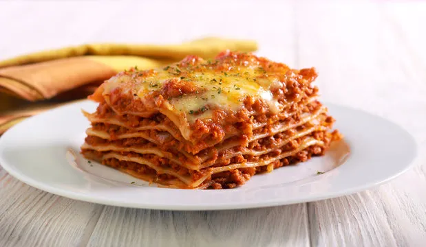

Lasagna Recipe

Lasagna is a type of wide, flat pasta, possibly one of the oldest types of pasta. Lasagna, or the singular lasagna, is also an Italian dish made of stacked layers of this flat pasta alternating with fillings such as ragù (ground meats and tomato sauce) and other vegetables, cheese (which may include ricotta and parmesan), and seasonings and spices such as garlic, oregano and basil. The dish may be topped with melted grated mozzarella cheese.
Here is a recipe for lasagna:
Prep time: 30 minutes
Cook time: 1 hour 30 minutes
Total time: 2 hours
Servings: 12
Yield: 1 lasagna
Ingredients
- 1 pound ground beef
- 1 onion, chopped
- 2 cloves garlic, minced
- 1 (28 ounce) can crushed tomatoes
- 2 (6 ounce) cans tomato paste
- 2 (6.5 ounce) cans canned tomato sauce
- 1/2 cup water
- 2 tablespoons sugar
- 1 teaspoon dried basil leaves
- 1/2 teaspoon fennel seeds
- 1 teaspoon Italian seasoning
- 1 tablespoon salt
- 1/4 teaspoon ground black pepper
- 4 tablespoons chopped fresh parsley
- 12 lasagna noodles
- 16 ounces ricotta cheese
- 1 egg
- 3/4 teaspoon salt
- 3/4 pound mozzarella cheese, sliced
- 3/4 cup grated Parmesan cheese
Instructions
- Preheat oven to 375 degrees F (190 degrees C).
- In a large skillet, cook and stir ground beef, onion, and garlic in olive oil until well browned. Add crushed tomatoes, tomato paste, tomato sauce, and water. Season with sugar, basil, fennel seeds, Italian seasoning, 1 tablespoon salt, pepper, and 2 tablespoons parsley. Simmer, covered, for about 1 1/2 hours, stirring occasionally.
- Bring a large pot of lightly salted water to a boil. Cook lasagna noodles in boiling water for 8 to 10 minutes. Drain noodles, and rinse with cold water. In a mixing bowl, combine ricotta cheese with egg, remaining parsley, and 1/2 teaspoon salt.
- To assemble, spread 1 1/2 cups of meat sauce in the bottom of a 9x13 inch baking dish. Arrange 6 noodles lengthwise over meat sauce. Spread with one half of the ricotta cheese mixture. Top with a third of mozzarella cheese slices. Spoon 1 1/2 cups meat sauce over mozzarella, and sprinkle with 1/4 cup Parmesan cheese. Repeat layers, and top with remaining mozzarella and Parmesan cheese. Cover with foil: to prevent sticking, either spray foil with cooking spray, or make sure the foil does not touch the cheese.
- Bake in preheated oven for 25 minutes. Remove foil, and bake an additional 25 minutes. Cool for 15 minutes before serving.
- Enjoy!
Back to homepage